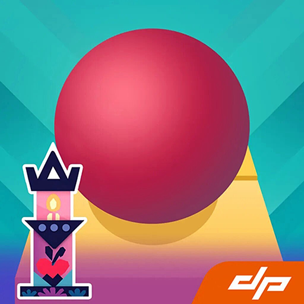
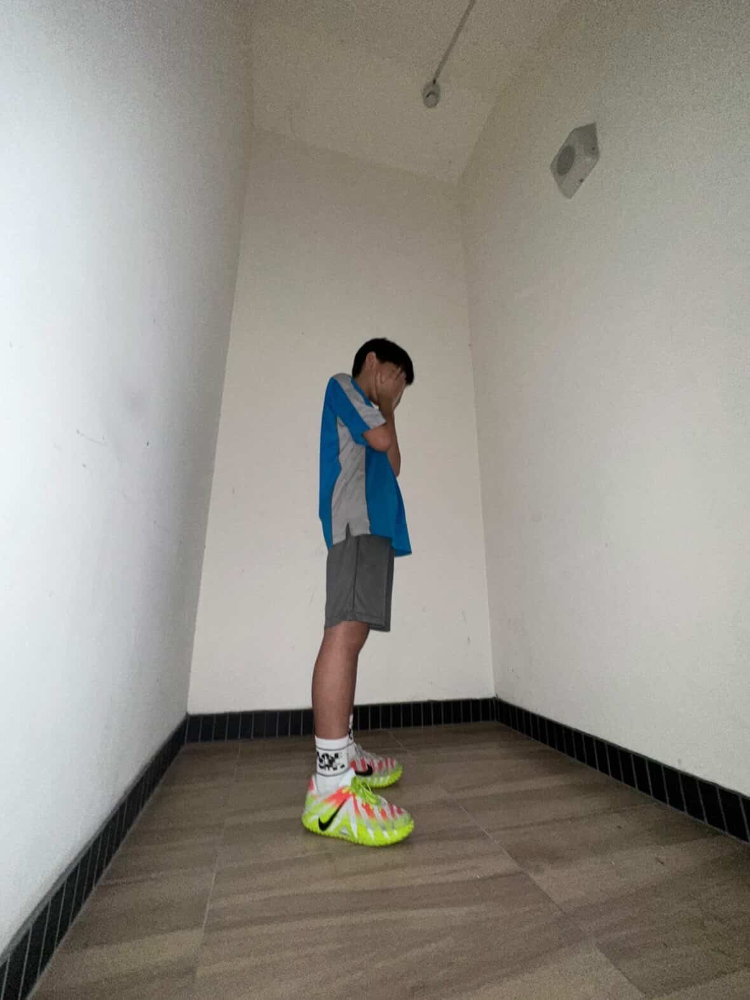
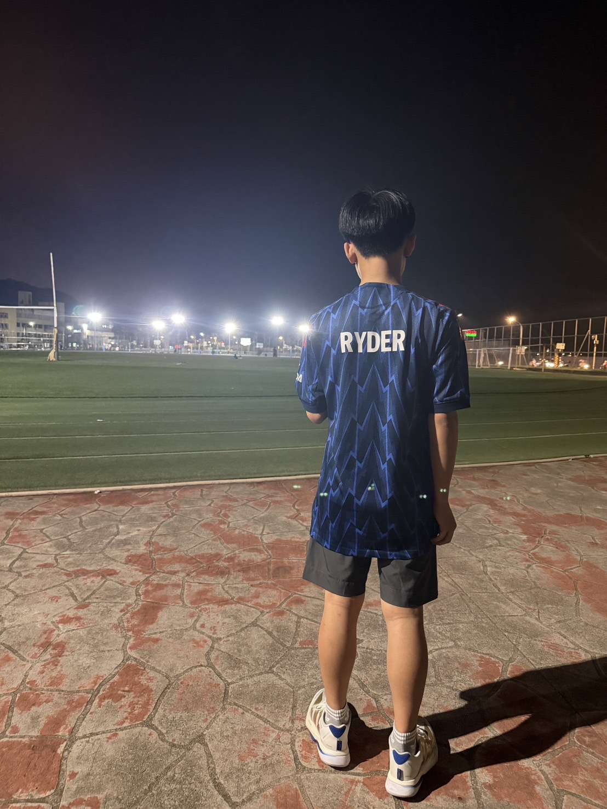
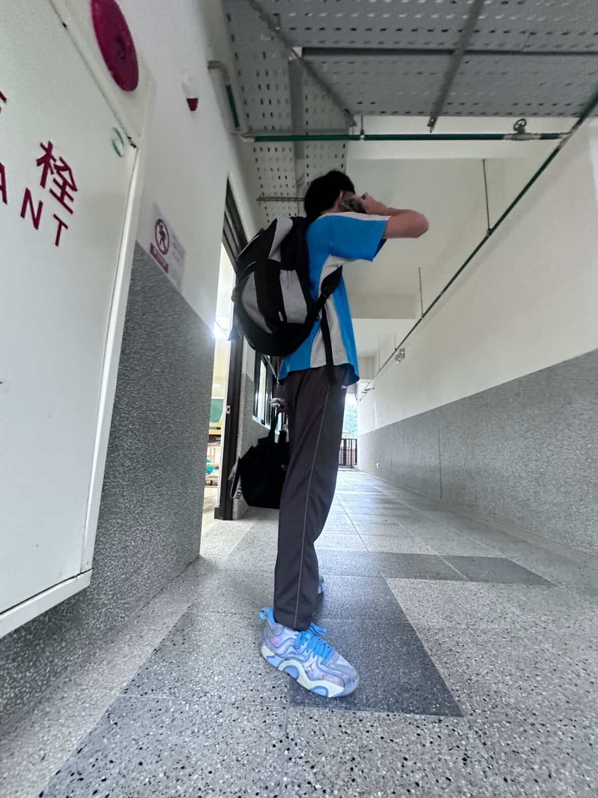

| 1.黃O彥 | 他喜歡球類運動, 也喜歡打荒野亂 鬥.他對自然科學 很有興趣,喜歡玩 各種植物. |
|
| 2.盧O杰 | 他喜歡藍綠色 ,專長唱歌,喜歡 自己編歌 |
 |
| 3.李O恩 |
他專長美術,不
擅長運動和學
習.
|
|
| 4.林O廷 | 他喜歡吃水果, 也喜歡打電動 ,不擅長運動和 手縫. |
|
| 5.陳O諭 | 他專長是打球, 興趣是跟同學 打電動,身高147. |
|
| 6.許O稘 | 他喜歡睡覺,畢 業於仁愛國小, 擅長打籃球和打 撞球. |
 |
| 7.黃O睿 | 身高147,興趣是 打羽球和畫畫, 她喜歡吃巧克力, 也喜歡看動漫 |
 |
| 8.楊O睿 | 他喜歡睡覺,玩手機 ,籃球,平常下課喜歡 找人聊天,是數學小 老師 |
|
| 9.劉O柯 | 他的專長是英文, 興趣是打遊戲, 例如三角洲. |
|
| 10.謝O安 | 他的興趣是打籃 球,擅長自然和數 學,也是國文小老 師 |
|
| 11.簡O安 | 他專長是拉大提 琴和彈鋼琴,喜歡 下軍棋,很愛睡覺 無聊的時候會看小 說,最喜歡的作者是 金庸 |
|
| 12.魏楷恩 | 他的興趣是踢足球 和排球 |
|
| 13.龔O澄 | 興趣是打籃球羽球, 身高166,喜歡看籃 球影片. |
 |